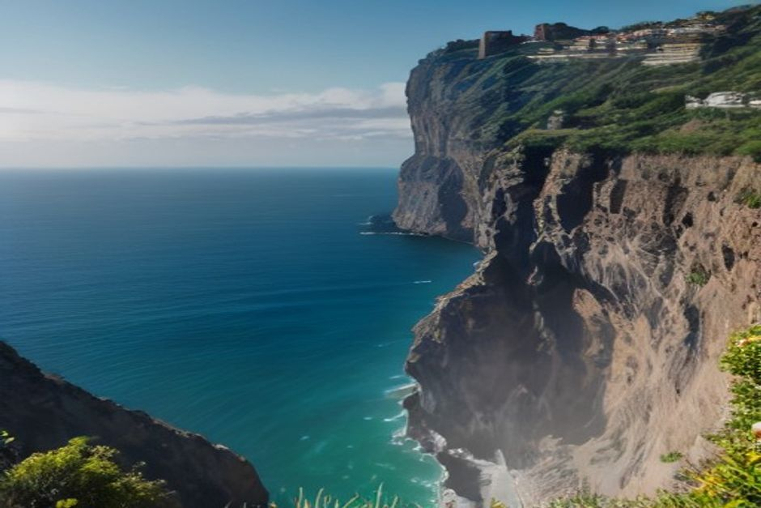
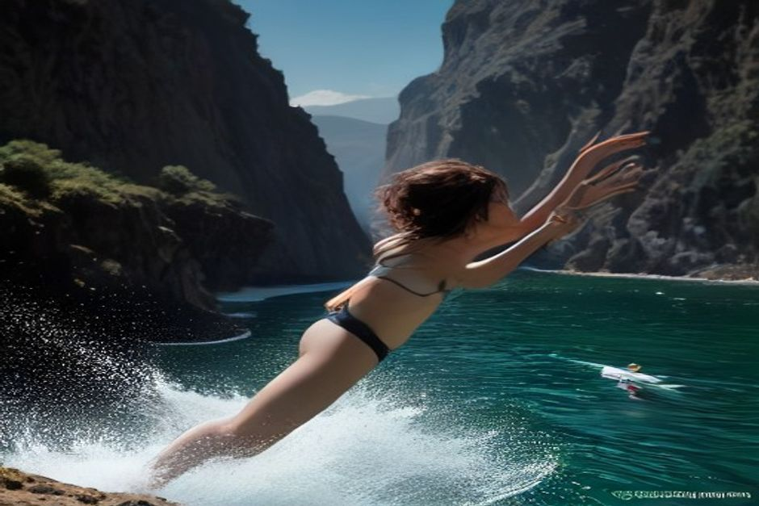

Wer „Klippenspringen auf Madeira“ googelt, hat meist Bilder von türkisfarbenem Wasser und Felsen im Kopf. Die Realität ist nüchterner: Der größte Teil der Küste ist steiles Vulkangestein ohne markierten Einstieg, ohne Rettungsschwimmer und mit Strömungen, die niemand für Sie geprüft hat. Dieser Ratgeber sagt Ihnen, wo Klippenspringen auf Madeira vertretbar ist, welche Klippen Sie in Ruhe lassen sollten und wie der Sprung vom privaten Boot abläuft.
Kurz gesagt: Was Sie vor der Reise wissen sollten
- Es gibt auf Madeira kein Gesetz, das das Springen verbietet. Es gibt aber auch keine geprüften, ausgeschilderten Sprungstellen und keine Aufsicht an den Felsen.
- Der Atlantik hat hier ungefähr 18 bis 23 °C, am wärmsten von Juli bis Oktober.
- Zwei Wege sind in der Praxis sinnvoll: eine geführte Coasteering-Tour oder der Sprung von einem Boot, dessen Crew das Wasser vorher prüft.
- Vom Cabo Girão springt man nicht. Die Klippe ist 580 Meter hoch und hat unten keinen Wasserzugang.
Warum die Küste so tückisch ist
Madeira ist vulkanisch. Die Klippen sind aus Lavaströmen entstanden, und an ihrem Fuß liegt oft ein Durcheinander aus Fels unter der Wasseroberfläche. Die Tiefe wechselt plötzlich, und die Dünung kann eine Stelle innerhalb einer Stunde von ruhig zu gefährlich kippen lassen.
Anders als an einem bewachten Strand patrouilliert hier niemand an den Felsen. Eine inselweite Liste „erlaubter“ Sprungstellen gibt es nicht. Was Sie auf Fotos im Netz sehen, sagt Ihnen nicht, wie tief das Wasser an diesem Tag war oder wie hoch die Dünung stand.

Zwei sichere Wege ins Wasser
Beide Wege haben eines gemeinsam: Jemand mit Ortskenntnis prüft, bevor Sie springen.
Geführtes Coasteering
Coasteering-Touren führen an Teilen der Südküste entlang. Sie verbinden Schwimmen, Klettern über Felsen und kurze, geführte Sprünge von niedrigen Vorsprüngen. Der Anbieter wählt die Stellen aus und sagt sie ab, wenn die Dünung an diesem Tag nicht passt. Sie brauchen dafür etwas Trittsicherheit, denn es geht über Fels.
Der Sprung vom Boot
Die zweite Möglichkeit ist ein Boot. Geschützte Buchten wie Fajã dos Padres bei Câmara de Lobos erreichen Sie bequem auf dem Seeweg. Dort springen Sie von der Badeplattform oder der Reling ins offene, geprüfte Wasser. Das ist dieselbe Idee in klein und ohne Kletterei.
Klippe oder Boot: Der Unterschied beim Springen
Es kommt auf zwei Dinge an: die Fallhöhe und darauf, wie gründlich das Wasser darunter geprüft wurde.
Bei einem echten Klippensprung legen Sie sich auf einen festen Fall fest. Was darunter liegt, sehen Sie von oben nie ganz, auch nicht auf einer geführten Tour: Fels, Strömung oder Tiefe.
Vom Boot ist der Fall viel kleiner, meist etwa einen Meter von der Badeplattform oder der Reling. Die Crew ist vorher im Schritttempo durch die Stelle gefahren und hat bestätigt, dass das Wasser klar und tief genug ist. Sie vertrauen dann nicht einem Felsvorsprung, auf dem Sie nie standen, sondern Skippern, die dieselbe Küste regelmäßig befahren.
Fajã dos Padres: Warum die Bucht zum Springen taugt
Fajã dos Padres gehört zu den verlässlicheren Stellen an der Südküste, und zwar weil sie geschützt liegt. Die Klippen um die Bucht halten den Wind ab, der das offene Wasser anderswo aufraut. An den meisten Tagen ist es hier ruhig und klar. Es gibt einen Kieselstrand, und vom Boot aus kommen Sie leicht ins Wasser.
Zu Land erreichen Sie die Bucht auch per Seilbahn vom Klippenrand. Vom Meer aus stehen Sie aber direkt vor dem Wasser, statt oben an einem 300 Meter tiefen Abgrund. Wie sich so ein Tag anfühlt, lesen Sie auch in unseren Bewertungen.
Checkliste: Das sollten Sie vor jedem Sprung prüfen
- Tiefe und Untergrund. Springen Sie nie in Wasser, das weder Sie noch ein Guide als frei von Gestein bestätigt haben.
- Dünung und Strömung. Eine Bucht, die um 10 Uhr spiegelglatt ist, kann um 14 Uhr anders aussehen. Bedingungen werden am Tag selbst geprüft, nicht von einem früheren Besuch übernommen.
- Jemand schaut zu. Von oben oder vom Boot aus, bei jedem Sprung.
- Abbrechen, wenn sich etwas ändert. Zieht Bewölkung auf, dreht der Wind oder wird die Dünung spürbar stärker, hören die Sprünge auf.
Das ist keine Spezialregel für Wagemutige. Es ist die Routine, die eine Bootscrew ohnehin durchgeht, bevor jemand ins Wasser darf.

Wo Sie lieber nicht springen: Cabo Girão und der Rest der Küste
Das Cabo Girão ist ein Aussichtspunkt, keine Sprungstelle. Die Klippe ist 580 Meter hoch, senkrecht, am Fuß gibt es keinen Wasserzugang und keinen sicheren Abstieg. Den besten sicheren Eindruck bekommen Sie vom Meer aus: Vom Boot schauen Sie nach oben statt hinunter.
Auch für andere Felsvorsprünge entlang der Küste gilt: Wenn Sie nicht wissen, was unter der Wasseroberfläche liegt, springen Sie nicht. Ein Spot, der auf einem Foto harmlos aussieht, ist es deshalb noch nicht.
Wann ist die beste Zeit zum Springen?
Das Wasser ist zwischen Juli und Oktober am wärmsten, mit ungefähr 18 bis 23 °C über die Saison. Am frühen Abend kühlt es spürbar ab. Deshalb plant Chifbay die Sonnenuntergangsfahrt ohne Badestopp: Steht die Sonne tief, fühlt sich das Wasser zu kalt an. Wer springen und schwimmen möchte, bucht besser die Tagesfahrt um 10:00 oder 14:00 Uhr.
So läuft der Sprung ins Meer bei Chifbay ab
Für den Sprung ins Wasser ist unser privater Day Trip ab der Marina do Funchal, Steg C, gedacht. Das Boot gehört nur Ihrer Gruppe, bis zu 5 Gäste, mit zwei lizenzierten Skippern aus Madeira.
- Abfahrt: 10:00 oder 14:00 Uhr.
- Strecke: Câmara de Lobos, Cabo Girão, dann Badestopp mit Schwimmen und Paddle Boards bei Fajã dos Padres.
- Dauer und Preis: 2 Std. 30 bis Ribeira Brava für 500 EUR, oder 3 Std. weiter bis Ponta do Sol für 600 EUR. Die Preise gelten für das ganze Boot, nicht pro Person.
- Inklusive: Essen und Getränke an Bord, ein 360°-Video mit der Insta360, Drohnenaufnahmen (wenn das Wetter es zulässt) und Fotos mit einer richtigen Kamera.
- Stornierung: kostenlos bis 24 Stunden vor Abfahrt.
Bevor jemand ins Wasser geht, prüft die Crew die Bedingungen. Ob und wo gesprungen wird, entscheidet am Ende der Tag: Dünung, Wind und Sicht lassen sich nicht planen. Mehr zum Ablauf und zu den Alternativen finden Sie bei den Bootstouren auf Madeira und in den praktischen Infos. Wenn Sie lieber am Abend fahren, gibt es die Sonnenuntergangsfahrt, allerdings ohne Badestopp.
Die Klippen machen die schönen Fotos. Die Prüfung macht den Sprung erst sicher.
Madeiras Küste lohnt sich vom Wasser aus, aber sie ist kein Ort für spontane Sprünge von einem unbekannten Felsen. Wählen Sie eine kontrollierte Stelle, lassen Sie jemanden mit Ortskenntnis zuerst das Wasser prüfen, und der Sprung selbst ist der leichte Teil. Alle Touren im Überblick sehen Sie unter Erlebnisse.